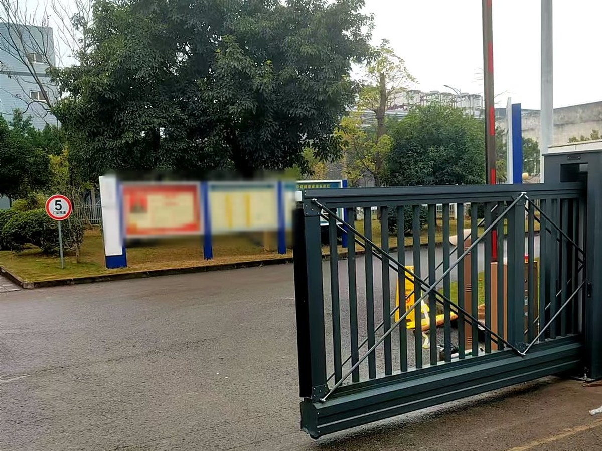
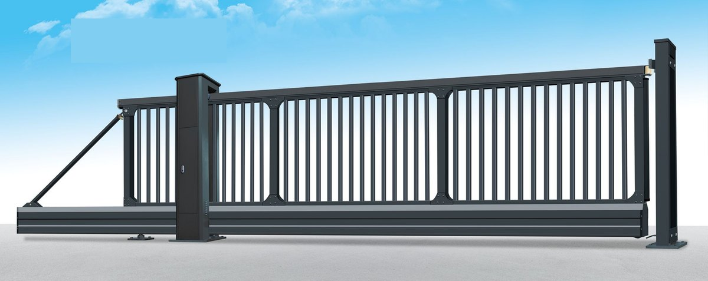

先判断：这个入口适不适合装悬浮门
悬浮门不是“更高级的伸缩门”，两者的结构完全不同：伸缩门靠交叉杆收放、门体落地走轮；悬浮门是整扇门体离地、靠托轮和立柱导向平移。判断标准也就一件事——洞口宽不宽、地面能不能开槽。
| 现场情况 | 适合度 | 说明 |
|---|---|---|
| 厂区主入口，洞口 10 m 以上 | 适合 | 门体分段悬挂，超宽洞口比伸缩门更稳，收放不占门口车道 |
| 地面已硬化，不能开槽 | 适合 | 无地轨是它最主要的施工优势，安装不动原有地面 |
| 重载车辆、挂车频繁进出 | 适合 | 没有轨道可以被压坏，也不会有槽里积泥卡轮的问题 |
| 门口有大坡度或常年积水 | 谨慎 | 要核算门体离地间隙与排水，必要时改门型或先做场地处理 |
| 人行小门、3 m 以内的通道 | 不建议 | 平开门或小尺寸伸缩门更经济 |
| 强风口、山口、沿海位置 | 需核算 | 分段方案与立柱基础要按当地风荷载算，不能照搬标准图 |
悬浮门靠什么“悬”起来
把这五部分搞清楚，报价单上的差别就看得懂了。悬浮门的成本大头不在电机，而在门体分段、立柱和基础——这三项决定它能做多宽、抗多大风。
① 门体框架
铝合金或钢质型材，按洞口宽度分成若干段拼接。段数越多，单段的悬挑长度越短，运行越稳，但连接件和安装工作量也越多。
② 下梁与导向托轮
这是“悬浮”的来源：门排下梁由导向托轮支撑，靠杠杆平衡保持门体离地运行。托轮的磨损和调整，直接决定门体运行时会不会下沉、跑偏。
③ 立柱与驱动
主动立柱里装电机、齿条或链条，以及离合装置。立柱基础是整樘门的受力点，必须按图纸浇筑，不能直接坐在回填土或地砖上。
④ 控制与感应
遥控、按钮、车牌识别、门禁刷卡、道闸联动，按出入口管理方式组合。有值班室的门口，通常还会加快捷开关和状态指示。
⑤ 安全装置
红外对射、遇阻停止、防爬。人车混行或夜间无人值守的入口，这几项不是选配，是必需。
选型要问清楚的五件事
- 洞口净宽与分段数——宽度决定门体分几段、立柱装几根，也决定价格的大头。
- 门体高度与净空——常用 1.6–1.8 m；上方有雨棚、管线或限高的，要先量净空。
- 地面条件——平整度、坡度、排水。无地轨不等于对地面没要求，门体离地运行需要一条平整的通道。
- 通行方式——遥控、车牌识别、门禁、值班室按钮，联动方式在报价阶段就要定。
- 抗风要求——当地基本风压、是否迎风口、门体高度，三项一起决定分段方案和基础尺寸。
参数参考
| 项目 | 常规配置区间 | 说明 |
|---|---|---|
| 适用洞口宽 | 6–30 m | 更宽按分段与结构核算，不是简单加长 |
| 门体高度 | 1.6–1.8 m | 图册悬浮门 01 标注最佳高度 1700 mm |
| 运行速度 | 0.3–0.5 m/s | 按门体长度与配重调整，宽门不宜一味求快 |
| 驱动 | 电机 + 齿条/链条 | 220 V 单相或 380 V 三相，按现场电源定 |
| 控制方式 | 遥控、按钮、车牌识别、门禁 | 按出入口管理方式选配 |
| 安全装置 | 红外对射、遇阻停止、防爬 | 人车混行、夜间无人值守建议全配 |
| 基础 | 独立立柱基础 | 无地轨，但基础与预埋件要按图纸施工 |
安装前，现场要具备什么
- 立柱基础：混凝土基础与预埋件，强度达到后才能安装；基础位置偏差会直接导致门体跑偏。
- 运行通道：门体悬空经过的地面要平整、无凸起，宽度足够门体运行。
- 电源与控制：电源引到立柱或值班室，控制箱位置要防雨、便于操作。
- 排水：门口低洼处先处理，避免积水影响托轮与电机。
- 净空：门体上方不能有雨棚、管线、树枝，否则运行时干涉。
维护：四件事按周期做
| 周期 | 做什么 | 为什么 |
|---|---|---|
| 每月 | 听运行声音、看门体有无下沉跑偏、清理运行通道 | 托轮异常最先表现为异响和轻微下沉 |
| 每季度 | 紧固件复紧、齿条/链条润滑、限位复核 | 长门体振动大，固定点松动会累积成故障 |
| 每半年 | 电机与控制系统检查、红外与遇阻测试 | 安全装置失效往往平时看不出来 |
| 每年 | 门体防腐检查、焊缝与连接件检查、基础沉降观察 | 户外门体的寿命取决于防腐和基础 |
项目实拍



常见问题
悬浮门和伸缩门到底差在哪？
结构不同：伸缩门靠平行四边形交叉杆收放、门体落地走轮；悬浮门是整扇门体离地，靠托轮与立柱导向平移，地面没有轨道。结果就是——超宽洞口、地面不能开槽、重载车辆频繁进出的入口，悬浮门更稳；洞口十来米、预算优先的场合，伸缩门更经济。
地面一定要开挖吗？
不需要预埋地轨，这是悬浮门最主要的施工优势。但立柱基础要开挖浇筑，门体运行范围内的地面要平整、能承重；门口是软土或回填土的，基础要按图纸加深处理。
大风吹会不会晃？
门体越高、洞口越宽，风的影响越明显。做法是分段控制单段长度、加密立柱与连接件、按当地基本风压核算，而不是照标准图施工。抗风压性能的检测方法见 GB/T 7106-2019，风荷载取值见 GB 50009-2012。
停电了门怎么开？
配手动释放装置，断电后可用离合或手摇把门体推到指定位置，不影响车辆通行。有消防或应急通行要求的入口，按项目加装备用电源或联动逻辑。
参考标准
- GB/T 7106-2019《建筑外门窗气密、水密、抗风压性能检测方法》
- GB 50009-2012《建筑结构荷载规范》（风荷载取值）
- GB/T 5226.1-2019《机械电气安全 机械电气设备 第1部分：通用技术条件》
本页更新于 2026-10-17。以上标准为产品选型与验收的通用依据，具体执行版本以项目所在地区现行有效版本为准。